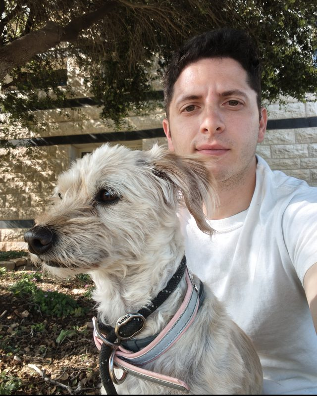

David Zeff

I'm David Zeff. I work as a budget analyst — תחשיבן — in the social services department of the Gush Etzion Regional Council, and I live in Alon Shvut.
Most of my week goes on public budgets: reconciling ministry transfers, forecasting departmental spend, running procurement, and building the small tools that make all of that less painful than it would otherwise be. It's unglamorous and I like it more than that makes it sound.
I studied computer science at Sapir College. That mostly shows up here as a habit. When a claim comes with a number attached, I want to see the number, find out where it came from, and run it myself.
What this site is for
Essays about economics, public policy and the data underneath both. Usually Israeli, not always. The rules I'm trying to hold myself to:
- Every figure is sourced, and the source sits on the chart rather than buried at the bottom.
- Every chart is built from a dataset in the public repository, so anyone can check my arithmetic.
- Anything illustrative is labelled illustrative.
- If there's a good argument against what I'm saying, it goes in the piece.
If I get something wrong I'd like to know.